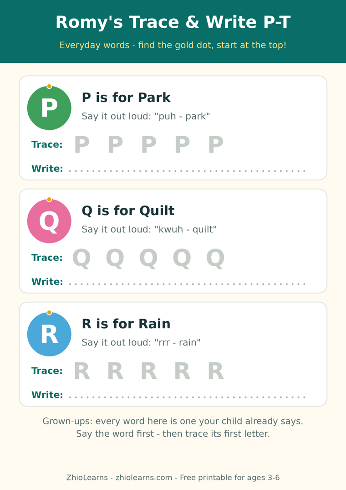

Touch It First, Then Find It in the Book: Learning Words Where They Live
Open any first-words book and the cup is right there on the page — blue, smiling, labelled in friendly letters. Your child looks at it, repeats “cup” when you say it, and turns the page. It all seems to be working. And yet a week later, that same picture can draw a completely blank stare.
The picture was never the problem. The order was. A word learned from a picture alone is a word about a picture. A word learned from the real thing — held, warm from the dishwasher, a little too full — is a word about the world. Swap the order, and the book starts working much harder for you: point to it in real life first, then find it in the book.
Recognition feels like winning
When a child meets “cup” in a book after drinking from their own cup that morning, the picture is not new information. It is a reunion. They are not memorising; they are recognising — and recognition comes with a small, visible rush of I know that one! That rush is not a bonus. It is the engine. It is what makes a three-year-old lean in, point hard at the page, and demand the next one.
Real life also gives the word more than one sense to hold on to. The door is not just a rectangle in a book; it is the thing that knocks, creaks, and opens to Grandma. The spoon is cold, and it clinks. Words with handles like that are simply harder to drop.
The five-minute kitchen-label walk
No labels, no sticky notes, nothing to prepare. Your kitchen already owns every teaching aid this needs:
Start at the table. Touch the real cup together. Say “cup” while your child’s hand is still on it, and let them say it back. Touch first, word second — the hand teaches the ear.
Walk to the door. Knock on it. Open it, close it: “door.” Then the spoon in the drawer, the chair they climb on, the apple in the fruit bowl. Three or four words is plenty.
Now open the book and hunt. “Where is the cup in Romy’s kitchen?” Watch how fast they find it. They are not guessing. They are remembering with their hands.
Tomorrow, let them lead. Walk the same kitchen again and say nothing. Most children will touch the cup before you even ask — the route, and the words, are becoming theirs.
That is the whole lesson, and it fits inside the time it takes toast to cool. Short is not a compromise here; short is what a young attention span can actually carry home.
Keep the circle small
Resist the tour of the whole house. A small circle of words — cup, door, spoon, chair, apple — repeated over a few days will out-teach twenty words marched past once. Add a new one only when the old ones get found in the book instantly, without the walk. That instant finding is your signal: the word has moved from the kitchen into the reader.
And when a word will not stick, do not drill it. Just use it more, out loud, in its real place: “Pass me the spoon — the spoon, thank you!” Words learned where they live rarely need to be chased.
An alphabet built where words live
Romy’s Alphabet – Everyday Edition was made for exactly this order of events. For ages 3–5, it pairs every letter with everyday words and pictures from a young child’s real life — home, food, animals, the park — so the book half of the game is already stocked with things your child can go and touch. Walk the kitchen first, then sit down together and let Romy’s pages feel like a victory lap. It is also a gentle friend for ESL families, building English vocabulary one familiar, touchable word at a time.
The free printable below continues the same idea with a pencil: P is for Park, Q is for Quilt, R is for Rain, S is for Sun, T is for Table — and the table, at least, is probably within arm’s reach right now. Touch it first. Then trace it.
🖨️ Free printable: Romy’s Trace & Write P–T — Everyday Words

Trace and write P Park, Q Quilt, R Rain, S Sun and T Table, each starting from the gold dot — then write all five on your own. Two pages, ages 3–6, free, no sign-up needed to print it.
Download the free printable (PDF)📚 Today’s book
Find Romy’s Alphabet – Everyday Edition and Romy’s other books in our little shop — and read Romy’s Alphabet Picnic free in the Storytime section.
See Romy’s books →🌿 More from the Parent Corner
Yesterday’s idea flips today’s around: once your child knows a letter, let them teach it back to you. Explaining it in their own words is how it moves in for good.
Teach Me the Letter →